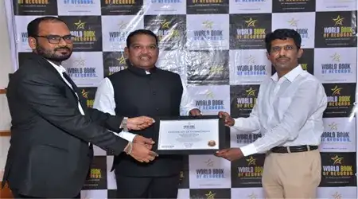
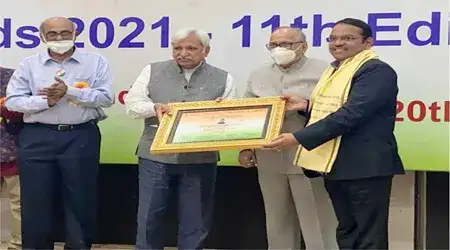
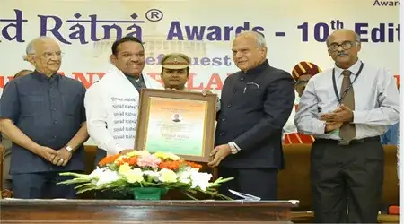
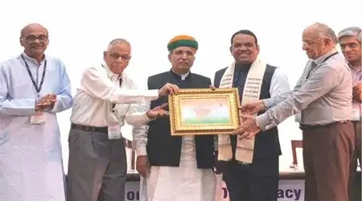
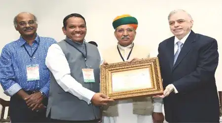
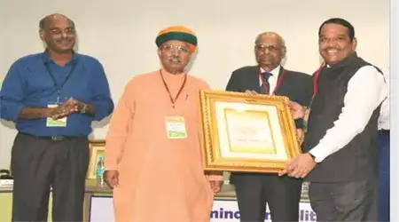
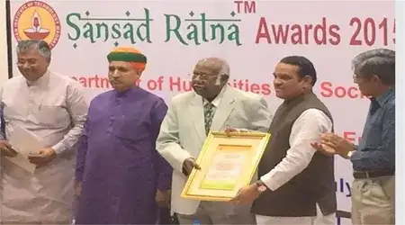

2024
तिसरी लोकसभा निवडणूक 2024
तिसरी लोकसभा निवडणूक विजय तिसऱ्यांदा लोकसभा खासदार म्हणून निवडून आले, हे मावळकर जनतेच्या विश्वासाचं प्रतीक ठरलं.
.webp)

मावळ लोकसभा मतदारसंघाला शाश्वत, समृद्ध आणि सक्षम बनवणे - जिथे नागरी सुविधा, शिक्षण, रोजगार, आरोग्य आणि पर्यावरण यांचा समतोल विकास साधला जाईल. युवकांना सक्षम बनवणं, महिलांना संधी देणं, आणि शेवटच्या घटकाच्या सशक्तीकरणासाठी सातत्याने कार्यरत राहणं, हीच माझी दूरदृष्टी आहे
सर्वसामान्य माणसाच्या हितासाठी पारदर्शक, उत्तरदायी आणि विकासाभिमुख नेतृत्व निर्माण करणे. मावळ लोकसभा मतदारसंघाचा सर्वांगीण विकास घडवून आणणे आणि प्रत्येक घटकापर्यंत शासनाच्या योजना प्रभावीपणे पोहोचवणे
तिसरी लोकसभा निवडणूक विजय तिसऱ्यांदा लोकसभा खासदार म्हणून निवडून आले, हे मावळकर जनतेच्या विश्वासाचं प्रतीक ठरलं.

वर्ल्ड बुक ऑफ रेकॉर्ड फाउंडेशन, भारत - ही एक अग्रगण्य संस्था आहे आणि आशियाई देशांमधील व्यक्ती किंवा संस्थांद्वारे रेकॉर्ड ब्रेकिंग किंवा नवीन रेकॉर्ड स्थापित करण्याच्या कारणास प्रोत्साहन देण्यासाठी भारतात नोंदणीकृत आहे. हे सन्मान म्हणून ओळख प्रमाणित करते, ठिकाणे आणि संस्थांना त्यांच्या अद्वितीय ओळखीसाठी सूचीबद्ध करते. हे वर्ल्ड बुक ऑफ रेकॉर्ड्स लिमिटेड, यूकेसह आंतरराष्ट्रीय ब्रँडसह जगभरात CSR क्रियाकलाप देखील करते.

संसद रत्न पुरस्कार सोहळ्याची 11 वी आवृत्ती शनिवारी, 20 मार्च 2021 रोजी कॉन्स्टिट्यूशन क्लब ऑफ इंडिया, नवी दिल्ली येथे आयोजित करण्यात आली होती. श्री सुनील अरोरा (भारताचे मुख्य निवडणूक आयुक्त), श्री अर्जुन राम मेघवाल (माननीय राज्यमंत्री संसदीय कामकाज) आणि श्री न्यायमूर्ती ए के पटनायक (माजी न्यायाधीश, भारताचे सर्वोच्च न्यायालय) प्रमुख पाहुणे होते. उत्कृष्ट कामगिरी करणाऱ्या 10 खासदारांचा गौरव करण्यात आला.

संसद रत्न पुरस्कारांचा 10 वा वर्धापन दिन 19 जानेवारी 2019 रोजी दरबार हॉल, राजभवन, चेन्नई येथे आयोजित करण्यात आला. 12 संसद सदस्यांना त्यांच्या उत्कृष्ट कामगिरीबद्दल तामिळनाडूचे माननीय राज्यपाल श्री बनवारीलाल पुरोहित यांच्या हस्ते सन्मानित करण्यात आले.

IIT मद्रास येथे 9 जून 2018 रोजी संसद रत्न पुरस्कार 2018 (9वी आवृत्ती) आणि राष्ट्रीय चर्चासत्र, लोकशाही आणि शासन (7वी आवृत्ती) आयोजित करण्यात आली. सहा खासदार आणि एका संसदीय समिती अध्यक्षांना त्यांच्या उत्कृष्ट कामगिरीबद्दल संसद रत्न पुरस्काराने सन्मानित करण्यात आले.

27 मे 2017 रोजी, 16 व्या लोकसभेतील (10 व्या अधिवेशनापर्यंत) उत्कृष्ट कामगिरी करणाऱ्या संसद सदस्यांचा सन्मान करण्यासाठी भारतीय तंत्रज्ञान संस्था मद्रास येथे संसद रत्न पुरस्काराच्या 8व्या आवृत्तीचे आयोजन करण्यात आले होते. न्यायमूर्ती (निवृत्त) श्री पी. सथाशिवम, केरळचे माननीय राज्यपाल यांनी पुरस्कार प्रदान केले.

IIT मद्रास येथे शनिवारी 11 जून 2016 रोजी राजकारण, लोकशाही आणि शासन (5वी आवृत्ती) आणि संसद रत्न पुरस्कार 2016 (7वी आवृत्ती) या विषयावरील राष्ट्रीय चर्चासत्र आयोजित करण्यात आले होते. 7 श्रेणींमध्ये 6 खासदारांना संसद रत्न पुरस्कार 2016 ने सन्मानित करण्यात आले. डॉ सी रंगराजन (आंध्र प्रदेशचे माजी गव्हर्नर आणि रिझर्व्ह बँक ऑफ इंडिया) यांनी पुरस्कार प्रदान केले.

श्रीरंग आप्पा बारणे – मावळ, महाराष्ट्रातून शिवसेनेचे पहिल्यांदा खासदार. 16 व्या लोकसभेच्या पहिल्या वर्षात 2015 चे अर्थसंकल्पीय अधिवेशन संपेपर्यंत 'प्रश्न उपस्थित करण्यात' ते प्रथम क्रमांकावर होते. त्यांनी एकूण 355 प्रश्नांसह 314 प्रश्न उपस्थित केले. त्यांनी 87% बैठकांना हजेरी लावली. संपूर्ण लोकसभेत एकूण टॅलीमध्ये ते दुसऱ्या क्रमांकावर आहेत.
© 2025 Shrirang Appa Barne. All rights reserved.